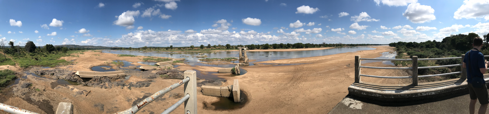
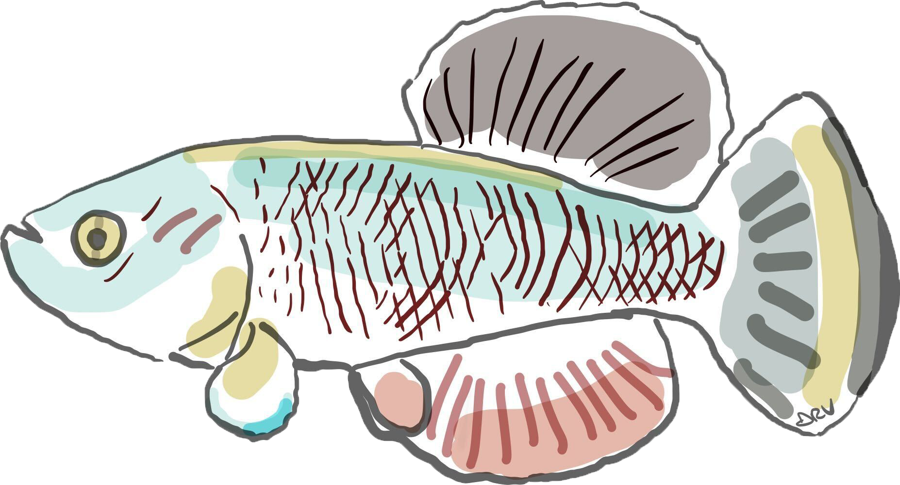
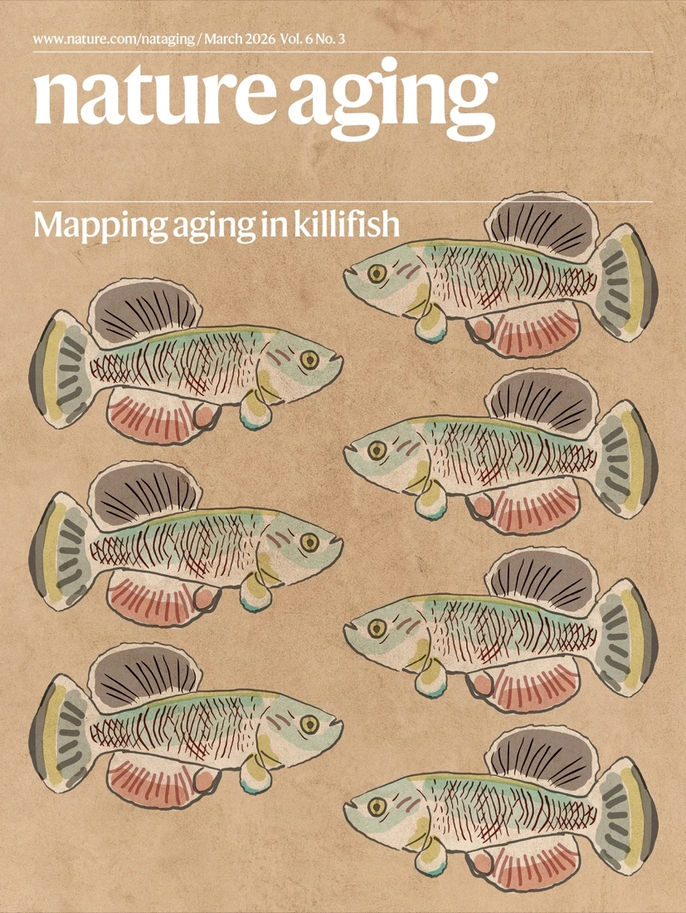
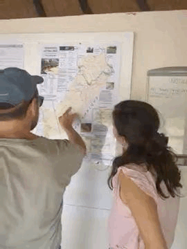

We love answering open questions at the intersection of evolution, ecology, and aging.
We investigate how evolution shapes life history traits across species in nature, combining evolutionary theory, comparative genomics, and animal physiology to understand why and how organisms age. We apply an evolutionary and ecological perspective to host-microbiome interactions in health, disease, and aging, and we use statistical modeling, experimental biology, and fieldwork in Zimbabwe to answer open questions and develop interventions that improve biomedical resilience.
If you are interested in joining our lab, see the openings page.
Evolution shapes the pace of aging
Lifespan varies enormously across species, even among closely related ones. We ask what evolutionary forces produce this variation. We build and test theoretical models of genome evolution in age-structured populations to understand how population size, mutation load, and selection interact to determine when and how fast species age. This framework applies across taxa: from bacteria and flies to vertebrates and humans. Our individual-based simulation platform AEGIS, now published in PLoS Computational Biology, implements these models in a species-agnostic, extensible framework for studying the evolution of life history traits.
Immune aging reshapes microbial communities

Killifish are a natural vertebrate model to study the evolutionary basis of immune aging. B cell diversity contracts sharply with age, antibody repertoires narrow, and immune progenitor cells accumulate DNA damage and reduce their repair capacity, driving systemic inflammation and microbial dysbiosis. We study how adaptive immunity evolved across killifish species, how somatic mutations accumulate in B cells over time, and how immune senescence shifts gut microbiome composition. We combine immunology, single-cell genomics, and comparative approaches to understand why immune-microbiome balance breaks down with age and how that breakdown accelerates aging. Our multi-omics atlas of killifish immune aging, KIAMO, is published in Nature Aging.
Gut microbiome co-evolves with the aging host
The gut microbiome changes dramatically as killifish age, and those changes feed back on host health. We study how hosts select their microbial community across the lifespan, whether commensal microbes evolve within a single host generation, and how shifts in microbial composition affect systemic aging and pathology. We use germ-free fish, microbiota transplants, culturomics, and longitudinal metagenomic sequencing to move from correlation to causation in host-microbiome interactions.
Ecology and Evolution of killifish in nature

Our primary field site is the Gonarezhou National Park in Zimbabwe, which hosts natural populations of turquoise killifish in seasonal pools that evaporate each dry season. We study how demography, ecology, and predation shape killifish evolution in the wild, sampling genetics, gut microbiota, and aging biomarkers directly from living populations. In collaboration with the Gonarezhou Conservation Trust, we conduct molecular work on site, including Nanopore sequencing directly in the field. Field observations constrain and motivate our laboratory models; laboratory findings guide what we measure next in the field.